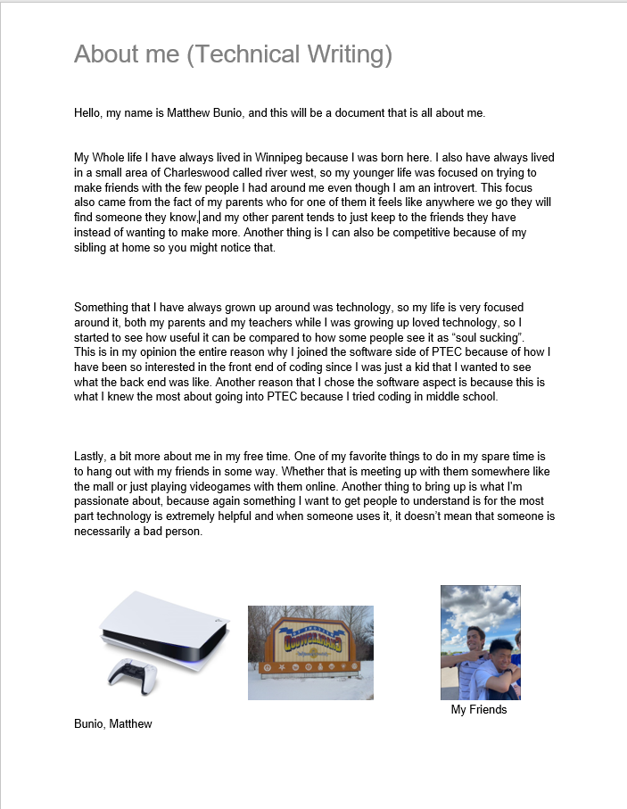

About Me
My Whole life I have always lived in Winnipeg because I was born here. I also have always lived in a small area of Charleswood called river west, so my younger life was focused on trying to make friends with the few people I had around me even though I am an introvert. This focus also came from the fact of my parents who for one of them it feels like anywhere we go they will find someone they know, and my other parent tends to just keep to the friends they have instead of wanting to make more. Another thing is I can also be competitive because of my sibling at home so you might notice that.
